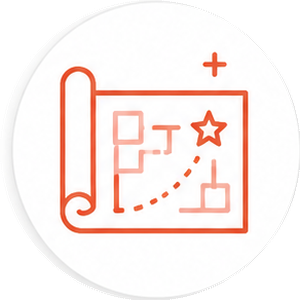
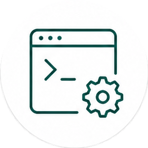
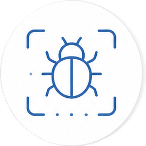
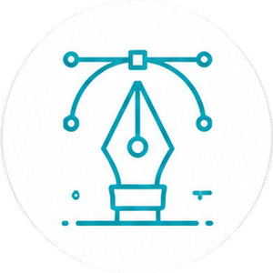

→
Brief
Describe the outcome once, in plain language.
A local-first command deck for Claude Code and Codex. Give one mission to a team that plans, builds, tests, and reviews in parallel.
Argo turns the coding CLIs you already trust into visual, collaborative agents. The model stays inside its native toolchain; Argo gives the team a shared room, an orchestrator, and clear human control.
Follow the conversation, inspect tool calls, approve sensitive actions, and open every artifact without dropping back to raw terminal output.
A moderator routes the mission, specialists work in isolated branches, and Argo synthesizes the result into one response.
Describe the outcome once, in plain language.
The moderator picks the right specialists and sequence.
Up to five agents work in parallel, isolated by Git worktrees.
Review the evidence and receive one coherent result.
Each agent has a focused mandate, model choice, and permission profile. Use the crew as shipped or create your own.
Maps systems, diagnoses structure, and makes the hard tradeoffs visible.

READ ONLYTurns requirements into ordered, verifiable work.

FULL ACCESSImplements focused changes with an eye for minimal diffs.
Checks the spec, security posture, and code quality before handoff.

FULL ACCESSReproduces failures, follows evidence, and lands the fix.
Builds coverage around happy paths, edge cases, and regressions.

FULL ACCESSShapes clear, responsive, and accessible product experiences.
Handles branches, releases, and deployment mechanics.
Every tool call passes through a four-level risk classifier. Routine reads keep moving; sensitive writes stop for a decision you can understand.
git push origin feature/agent-routingThis action updates a remote branch and may affect collaborators.
Connect MCP servers, compose reusable skills, pin the context that matters, and deploy what your agents build—all without routing your project through an Argo cloud.
$ git clone https://github.com/ashuiGordon/argo.git
$ cd argo
$ pnpm install
$ pnpm devPlan together. Build in parallel. Keep control.
get argo on github